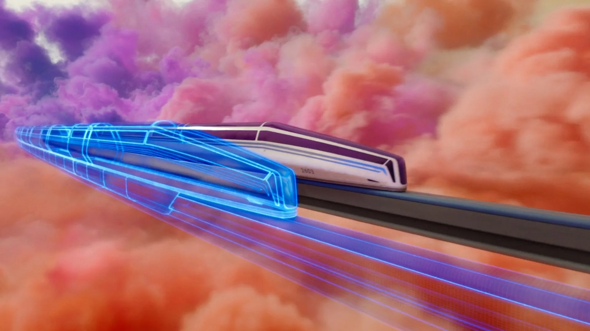
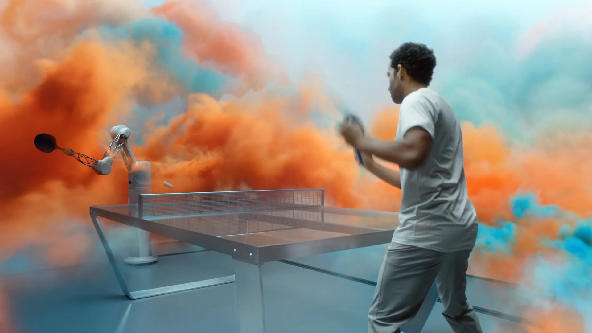
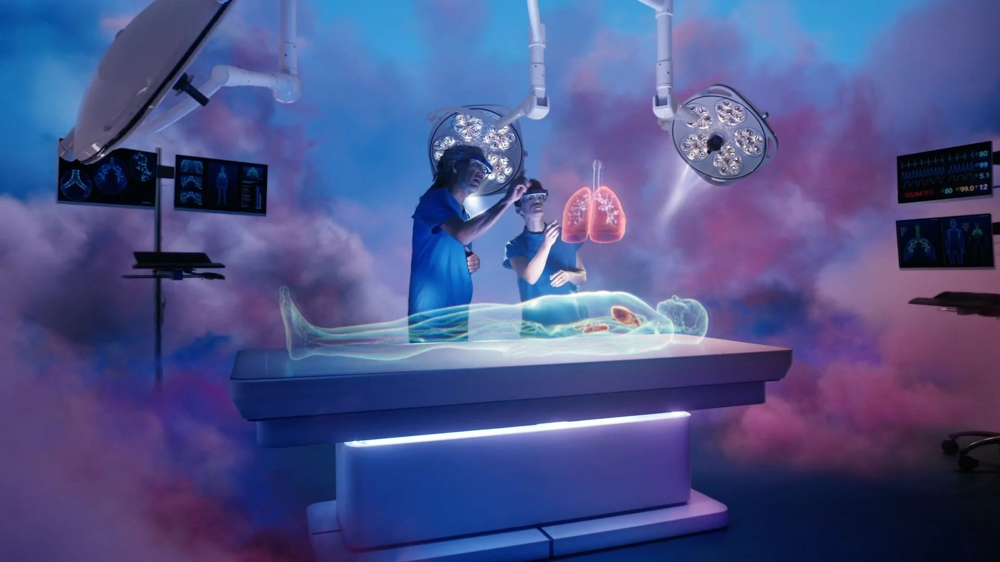
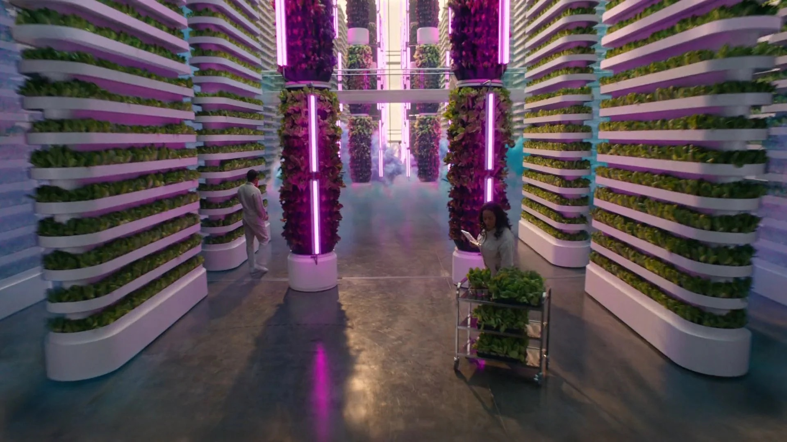
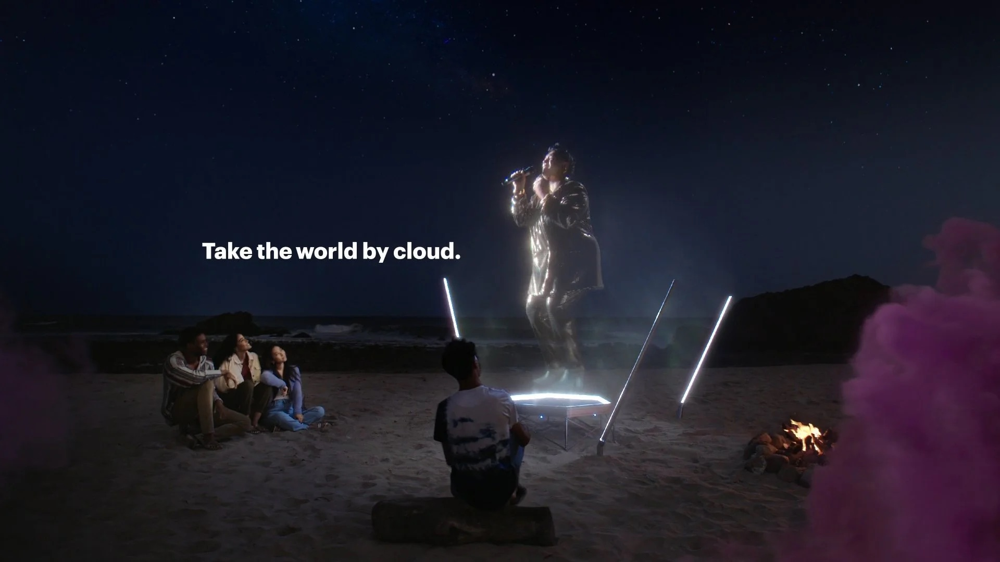

Take the World By Cloud
To roll out Accenture's new cloud consulting service, Cloud First, we developed a whimsical candy-colored film, weaving together scenes of cloud-powered innovation across different fields.
In one continuous shot, the eponymous cloud spawns a bullet train's digital twin, trains an athlete, assists surgeons, filmmakers, and farmers.
It was important to show the benefits of the cloud, without over-narrating. So the vignettes had to be visible and clear to anyone watching. The music, an original composition by Emile Mosseri, paired with the ever-moving camera, helped build forward momentum, bouncing through differents scenes as the cloud transformed and grew.
Though the spot certainly has dreamy qualities, it feels grounded and real. It was important to Accenture that their offering (consulting and cloud implementation strategy) felt distinct from anything B2B SaaS companies would create, so we spent a lot of time in postproduction making sure that cloud's color and movement served as an anchor.
Accenture Cloud First — :30




